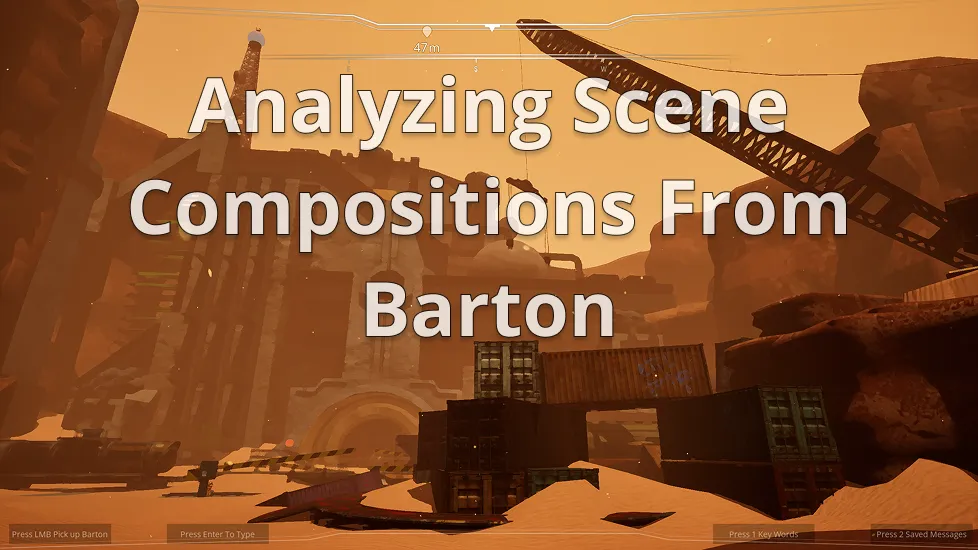

Level Design Portfolio
3D Projects
2D Project
Level Design Process
2 Projects Shipped to Steam
Explore academic cross-disciplinary team projects and solo project work that highlight my level design process.

Dev Blog
Explore a variety of topics discussing in depth level design process & lessons learned from projects I've contributed to!